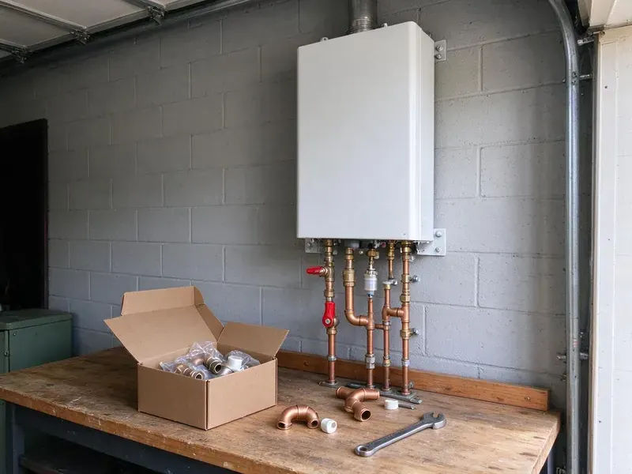

Water Softener Installation in Burien, WA
Our Burien, WA plumbers install water softeners on existing loops or add new loops for clean, soft water all through your home.
- Clear Pricing
- Fast, Dependable Service
- Quality Brands
- Fast Softener Installation

Need a Water Softener Installed in Burien, WA?
Our team is standing by to help you choose the best water softener for your needs and install it cleanly.
Professional Water Softener Installation in Burien, WA
We handle all aspects of water softener installation, from initial plumbing modifications to final system setup. FHN Plumbing delivers a smooth process, providing you with softer water that's better for your skin, clothes and appliances.
Our expertise includes:
- Salt-free conditioners and whole-home carbon filtration systems
- Reliable water hardness testing and system sizing
- Installation of all major water softener brands

Additional Plumbing Installation Services in Burien, WA
We install water heaters, pumps, lines, and fixtures across Burien, WA with precision workmanship that meets every local code.


Customers
Why Choose FHN Plumbing for Water Softener Installation in Burien, WA?
We help you navigate the options, from salt-based ion exchange systems to salt-free alternatives, to find the right fit for your Burien home and water usage.
- Healthier Skin & Hair, Eliminate the harsh effects of minerals, leading to softer skin and shinier hair.
- Better Water Quality, Soft water reduces mineral buildup, improving the taste and feel of your water.
- Quality Systems, We install long-lasting, high-performance water softeners from leading manufacturers.
Citywide Coverage
FHN Plumbing proudly serves every neighborhood of Burien and surrounding communities for water softener installation. Whether you're in an older district or a new development, our team is ready to provide prompt and reliable service.
Experienced Team
Our team understands local water conditions and the effects of hard water on plumbing. They recommend systems that balance performance, salt use and budget.
Safety-First Approach
Safety and code compliance are top priorities in all our water softener installations. We closely follow all local Burien, WA plumbing codes and industry standards, ensuring a safe and legally compliant setup for your home.
Trusted Certified Burien Plumbing Services Professionals
At FHN Plumbing, we take pride in providing certified plumbing services throughout Burien, WA. Backed by leading industry credentials, our experienced plumbers combine technical skill with genuine customer care. Whether it is repair, installation, or maintenance, we follow strict safety and quality standards to deliver lasting results you can trust.
Call Us Now PHCC Plumbing Contractor Recognition
PHCC Plumbing Contractor Recognition Better Business Bureau (BBB) Accreditation
Better Business Bureau (BBB) Accreditation Angi Certified Pro
Angi Certified Pro ISO 9001 Quality Management Certification
ISO 9001 Quality Management CertificationReliable Water Softener Installation Services in Burien, WA
Pelican Water Softener Installation in Burien, WA
Pelican Water Systems offer a variety of water treatment solutions, including both salt-based softeners and salt-free conditioners. If you've chosen a Pelican system for your Burien, WA home, FHN Plumbing can provide professional installation. Our plumbers ensure proper sizing, secure connections and correct startup procedures to get the most from the effectiveness and lifespan of your Pelican water softener or conditioner.

Water Softener Replacement Services in Burien, WA
If your old water softener is failing, inefficient or beyond repair, FHN Plumbing provides professional replacement services. We can help you upgrade to a newer, more efficient model that better suits your current needs and budget. Our team handles the safe removal and disposal of your old unit and installs the new system with little disruption to your Burien, WA home.
Salt-Free Water Conditioner Installation in Burien
For homeowners looking for an alternative to traditional softeners, we also offer salt-free water conditioner installation. These systems condition the water to prevent scale buildup without removing beneficial minerals or adding salt. While not true softeners, they are an excellent option for scale prevention and are popular in many Burien households.
Softener Loop Installation in Burien
A softener loop is the plumbing connection that routes your main water line through a softener. Many newer homes include a loop, but older homes often do not. We cut into the main line, install the loop and add a bypass valve. We keep outdoor hose bibs and irrigation on hard water when possible to save salt. A proper loop makes future service easy.
Salt-Based Water Softener Systems in Burien, WA
Salt-based water softeners are the most common and effective type, using ion exchange to remove hard minerals like calcium and magnesium. FHN Plumbing specializes in the installation of these traditional systems, making sure of proper brine tank setup and regeneration cycles. We can recommend efficient models that minimize salt and water consumption for your Burien, WA home.
Water Softener Replacement & Upgrades in Burien, WA
If your old water softener is failing, inefficient or no longer meets your needs, FHN Plumbing offers professional water softener replacement and upgrade services in Burien, WA. We can remove your outdated unit and install a newer, more efficient model, often with modern features like smart controls or higher capacity. Upgrading can save you money on salt and water usage in the long run.
Whole-House Water Softener Systems in Burien
A whole-house water softener system is installed directly on your main water line, treating all the water entering your Burien home. This means every faucet, shower and appliance receives soft water. Our installation process involves carefully integrating the system into your existing plumbing, including necessary bypass valves and pressure regulators, to provide comprehensive protection against hard water throughout your property.

Whole-Home Water Softener Installation in Burien
We install comprehensive whole-home water softener systems designed to treat all the water entering your property. This protects every faucet, shower and appliance from hard water damage. Our plumbers will determine the appropriate system size and type based on your household's water usage and local water hardness levels in Burien.
Water Softener Installation Near Me in Burien, WA
When you need water softener installation near me, our local plumbers can schedule fast. We bring testing kits and common systems on our trucks. Many installs are completed in a few hours.
When you need professional water softener installation, you want a trusted local company. FHN Plumbing offers convenient, high-quality service, ensuring that residents in Burien and surrounding towns have access to the best hard water solutions. Call us for service that's actually 'near me' and focused on your community.
FHN Plumbing at a Glance
- Fully licensed plumbing team covering Burien, WA
- Same-day appointments and 24/7 emergency response
- Upfront, flat-rate pricing before work begins
- 4.9-star rated by 382+ Washington customers
Burien Map
Burien Information
- Population
- 50,730
- Area codes
- 206/253/425
- Service area
- Burien and communities within 40 miles
- Nearby
- Renton, Kent, Seattle, Federal Way
Soft water can be slightly corrosive to copper over time, which sometimes shows up as pinhole leaks in older supply lines. A properly installed softener shields water heaters, pipes and fixtures in Burien, WA homes from constant scale buildup.
Expert Services
Trust our professionals for reliable FHN Plumbing solutions in Burien, WA.
Our Specialized Plumbing Services in Burien, WA
At FHN Plumbing, we provide a complete range of plumbing services across Burien, WA. From leak detection to full system installations, our team ensures fast, precise, and affordable service for both residential and commercial properties. Explore our core services below:


How Our Water Softener Installation Process Works in Burien, WA
From initial assessment to final setup, FHN Plumbing ensures a smooth and professional water softener installation in Burien, WA.
Request a Quote
Contact us at (425) 491-3131 to schedule a consultation. We'll discuss your needs, test your water and provide a detailed, no-obligation quote.
System Selection
Our experts will help you choose the best water softener system for your home, considering water hardness, usage and budget.
Professional Installation
Our certified plumbers will install your new water softener, ensuring all plumbing and connections are done to code and function properly.
Frequently Asked Questions About Water Softener Installation in Burien
Most water softener installations cost $1,500 to $4,000 including equipment. Adding a new softener loop typically adds $500 to $1,500 depending on access.
White scale on faucets, spotty dishes, dry skin and reduced water heater performance are common signs. A water test confirms hardness levels.
Homeowners with a loop can sometimes install a softener, but proper drain air gaps, bypass valves and programming matter. Professional installation helps avoid leaks and poor performance.
Most residential water softener installations can be completed in half a day, typically between 3 and 6 hours. This timeline can vary based on the complexity of your home's existing plumbing and the type of system being installed. We aim for efficient service with minimal disruption.
Many homes benefit from a softener when the water is hard. Soft water can be mildly corrosive to copper over time, which sometimes shows up as pinhole leaks in older supply lines. Softeners protect water heaters, fixtures and appliances from scale.
Most households add salt every one to two months depending on water use and hardness. Metered systems use salt more economically.
Maintenance mainly involves periodically adding salt to salt-based systems, typically every 4 to 8 weeks depending on water usage and hardness. It's also good practice to schedule annual check-ups with a professional plumber to ensure the system is operating efficiently and to address any potential issues.
With proper maintenance, a quality water softener system can last between 10 and 15 years, and sometimes even longer. The lifespan depends on the quality of the unit, the hardness of your water and how well it is maintained. Regular servicing can help extend its life.
What People Are Saying About Our Plumbing Experts?

Robert G.
The trenchless sewer replacement saved our front yard. They walked us through the camera inspection footage first so we knew exactly what we were paying for.
Sewer Line Replacement · Auburn, WA
Emily R.
I called FHN Plumbing for plumbing repair, and the technician was fast, polite, and thorough. They explained the problem clearly and fixed it the same day. I will definitely hire them again. Highly recommended!
Plumbing Repair · Burien, WA
Sofia M.
Two new toilets installed in one visit, no mess left behind, and the tech even adjusted a faucet he noticed was dripping. Fair pricing and really friendly.
Toilet Installation · Renton, WAJames P.
Our commercial plumbing system had a leak under the sink, and FHN Plumbing handled it professionally. The plumbers arrived quickly and restored everything without disruption to our customers.
Commercial Plumbing · Auburn, WALaura S.
I scheduled a water heater replacement, and the team made the process smooth and affordable. The new unit works perfectly, and they cleaned up after completing the job.
Water Heater Replacement · Seattle, WA
Mark T.
When our office needed drain cleaning, FHN Plumbing provided quick, reliable service. The plumber arrived on time and made sure every drain flowed perfectly before leaving. Very satisfied.
Drain Cleaning · Burien, WA